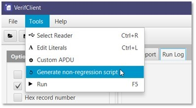
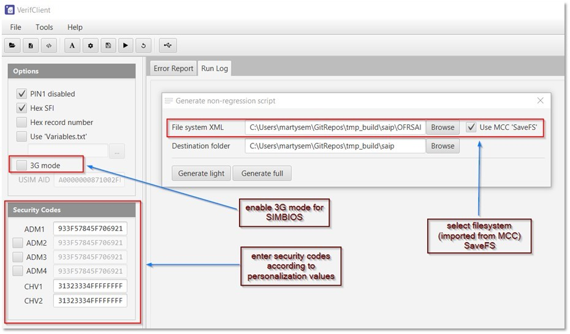
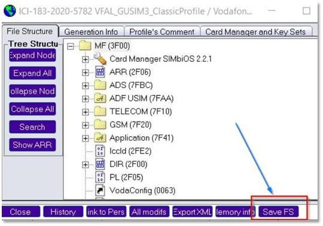
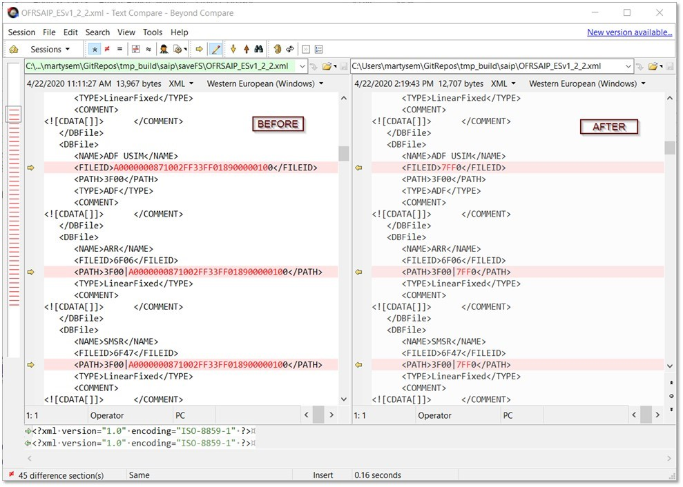
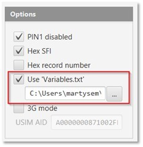
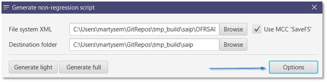
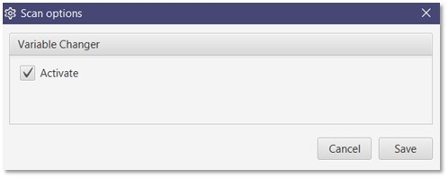
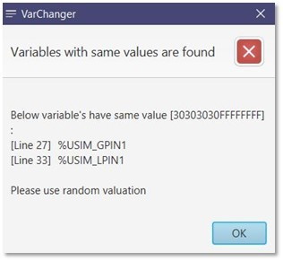
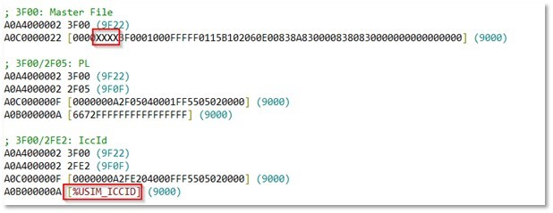
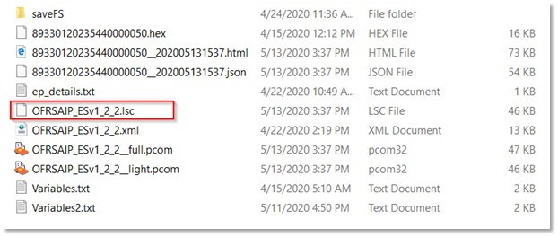

TEC file verification tool. It verifies card against customer specification.
Below is quick guide for some basic functionalities.
Card Scanner is intended to replace USIM Explorer for creating light & full script.


Card Scanner will require input file system which is imported from SaveFS in MCC, which is then also used for looking up the file name or description:

We need to modify the file system XML by replacing all AIDs (for application DFs such as USIM, ISIM, CSIM, etc.) with their corresponding DF IDs. This step is mandatory for the tool to work:

The generated scripts will be located in the selected destination folder along with some card dump report in json and html format.
VarChanger will replace all identified valuations in the script with their corresponding variable names.
|  | Make sure to choose variables.txt file. This file is exported from MCC Advance Save, and should be the valuations that are used for personalizing the card. |
|  | We now have Options button to allow some settings for card scanner. |
| Activate variable changer for replacing valuated contents with variable names |  |
|  | If, for example, you received warning like this; it means that the variables you created are not unique. Another fully randomized valuation set should be created. |
|  | If everything have been configured correctly, you will have generated script with valuated EFs printed in their variable name. |
|  | An LSC file will also be created, and this should be part of test result deliverables.
Note: LSC file will be used by preprod to automate their internal validation process. |